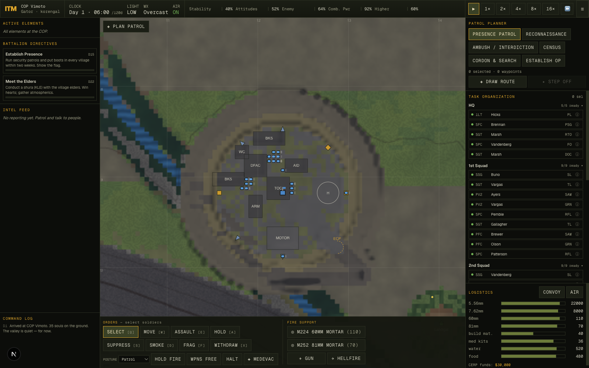
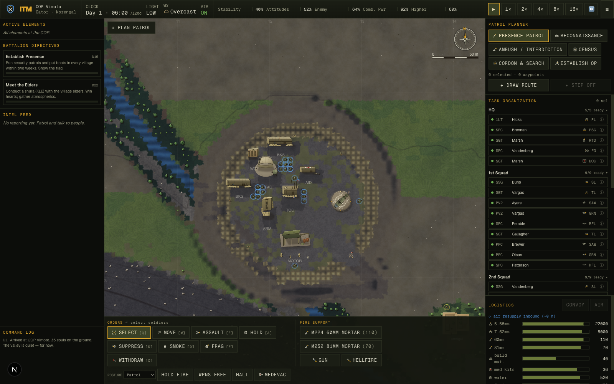
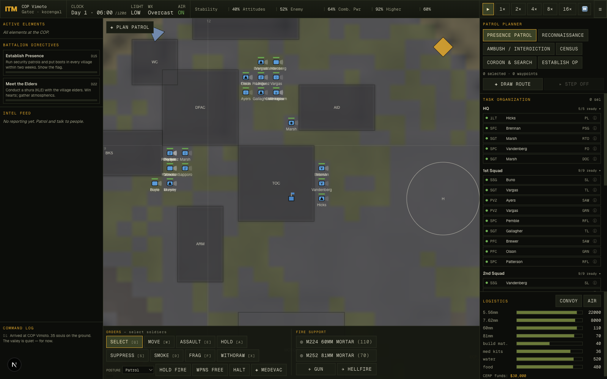
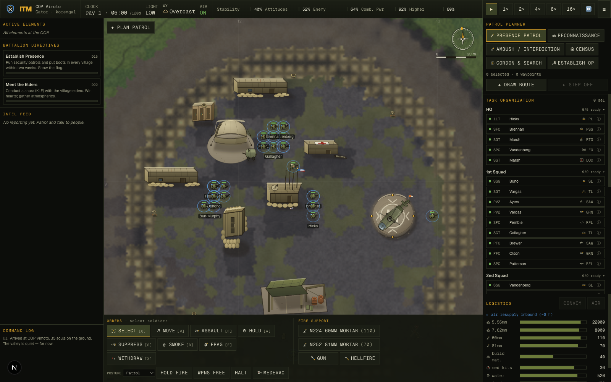
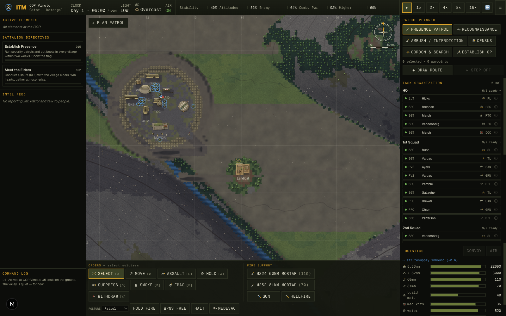
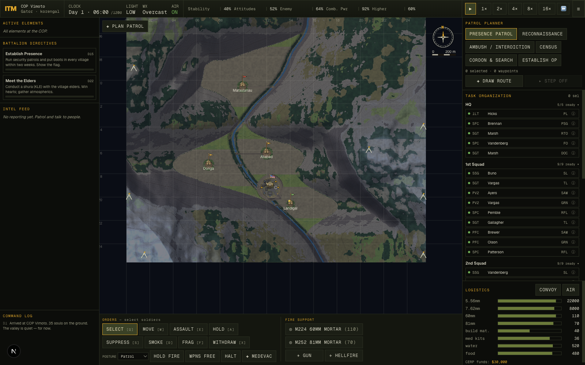

Design System
One light, one palette
Everything is lit from the north-west to match the terrain's baked hillshade, so each sprite grounds itself with a soft south-east shadow and reads as sitting in the diorama. Static objects bake a directional cast shadow; rotating sprites (soldiers, vehicles) use a symmetric contact shadow so any heading looks right. Colours stay dusty, warm and desaturated — faction tints are accents, never whole fills.
Level of detail across zoom
The camera spans ppm 0.18→8 — the whole 2.56 km valley down to a single outpost. Representations crossfade so the map is beautiful at every zoom rather than right at one.
| Band | Units | Structures | Terrain |
|---|---|---|---|
| Strategic ≤0.35 | NATO symbols | base / village pins | relief + contours |
| Operational 0.35–1.2 | symbols→figures | building footprints, pins | + sparse decoration |
| Tactical 1.2–3 | figure sprites | full COP, qalats, vehicles | decoration + detail layer |
| Close >3 | kit + facing + health | roofs, antennas, the flag | dense trees/rocks/grain |
Before & After
The baseline rendered entities as primitive canvas shapes — blue rectangles, wireframe boxes, coloured dots. The overhaul replaces them with authored art, a decoration layer, qalat villages, and a cartographic HUD.






The Asset Library — 160 pieces
Each card shows the asset on cropland, on the dark panel, and on scree, at 64 / 40 / 26 px — the squint test every asset had to pass. Footprint (metres) and rotation are noted.
US Infantry 11
Top-down US soldiers — one per role. Rotating sprites; faction read = blue IR-flag patch. The weapon is carried diagonally (never an axial 'pan-handle'); shoulders are the widest axis.
Afghan National Army 5
Lighter kit, teal-green accent, AK-pattern weapons — legibly 'ours but not US' at a glance.
Anti-Coalition Militia 8
Earth-tone shalwar-kameez fighters, turban/pakol heads (no helmet), red accent. Includes a translucent 'suspected' (unconfirmed contact) treatment.
Civilians & Livestock 8
Robed non-combatants carrying tools/loads — clearly unarmed and distinct from fighters — plus goats and a donkey.
COP Structures 10
2.5-D top-down buildings: corrugated roofs, sandbag berms, the TOC's comms cluster. Static — full NW key light + SE cast shadow.
Fortifications 11
HESCO bastion runs & corners, the ECP gate, guard towers, sandbag fighting positions, concertina, the flag — the bones of a combat outpost.
Aviation 2
UH-60 Black Hawk and CH-47 Chinook, top-down with translucent rotor discs, parked on the graded LZ pad.
Vehicles 4
MRAP, up-armored HMMWV, a local pickup 'technical', and a colorful Afghan jingle truck. Rotating (symmetric shadow).
Villages & Terrain Features 8
Mud-walled qalat compounds (3 sizes), a mosque, a cemetery, a bazaar stall, terraced fields, and a footbridge.
Vegetation & Rock 10
The high-zoom decoration layer — cedars, walnuts, poplars, scrub, boulders, outcrops, reeds, crop furrows — scattered deterministically by landcover.
Map Markers 18
Milspec ink: intel by source (SIGINT/HUMINT/visual), attitude-tinted village pins, the COP pin, objective/waypoint flags, MEDEVAC/TIC/IED, and named-feature glyphs.
HUD & Cartography 7
The sheet furniture — compass rose, north arrow, scale bar, legend frame, coordinate tab, range ring, edge ornament.
Order & Mission Icons 14
Flat toolbar icons for orders (move/assault/hold/suppress/smoke/frag/withdraw) and patrol missions.
Fire Support & CERP Icons 13
Mortars, CAS, MEDEVAC, and the CERP development projects (well, school, clinic, road, micro-hydro…).
Logistics, Status & Weather 15
Supply classes, soldier status badges, and weather glyphs for the command UI.
Role Badges & Crests 15
Per-role weapon glyphs for the roster, plus US / ANA / ACM faction crests.
How it composites on the map
Authored SVGs are rasterized once to offscreen canvases (bake-once / blit-many, like the terrain itself), then blitted scaled & rotated each frame. Terrain decoration is scattered from a stable per-cell hash so it never jitters on pan/zoom; a world-anchored noise overlay adds high-frequency tooth that hides the relief bitmap's upscaling blur. The whole stack holds >60 fps with the simulation running. Renderer: lib/render/{sprites,topo,draw,decoration}.ts + components/world/WorldView.tsx; assets in docs/visual-overhaul/assets/.